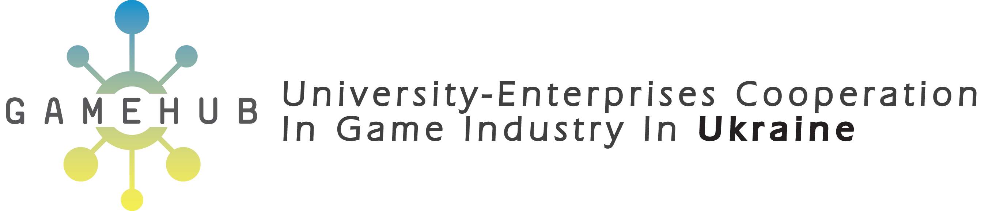
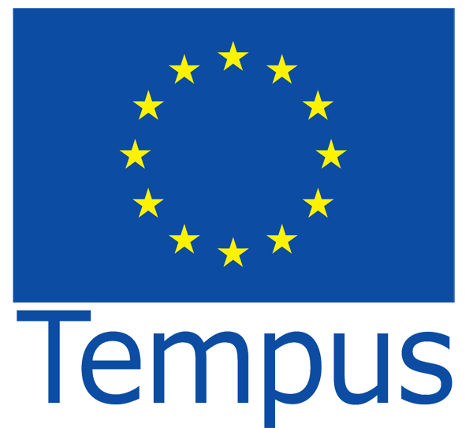

		<div class="main main-raised">
			<div class="profile-content">
	            <div class="container">
	                <div class="row">
	                    <div class="profile">
	                        <div class="avatar">
	                            <a href=".."></a>
	                        </div>
	                        <div class="name">
	                            <h1 class="title">Міжнародне співробітництво</h1>
								<h6></h6>
	                        </div>
	                    </div>
	                </div>


					<div class="row cooperation">
						
						<div class="row">
							<div class="col-md-10 col-md-offset-1"><a href="http://gamehub-cbhe.eu/ua/" target="_blank"></a></div>
							<div class="col-md-12 text-center">
								<p>Проект GameHub – співробітництво в області  комп’ютерної ігрової індустрії (Іспанія, Польща, Австрія) </p>
								<p>Проект GameHub ініційовано для допомоги українським студентам інженерних спеціальностей отримати знання і навички у сфері комп’ютерного дизайну та розробки комп’ютерних ігор, підвищуючи тим самим їх шанси на працевлаштування і самодостатність.<br>

								Проект спрямований на створення GameHub інфраструктури, що сприятиме підвищенню кваліфікації випускників університетів та розвитку цифрового виробництва за допомогою надання освітніх ресурсів, консультування факультетів університетів і центрів по безробіттю.<br>

								Цільова група проекту: представники вищих навчальних закладів – викладацький склад і студенти; представники центрів по безробіттю, ATO ветерани та інженери, зацікавлені працювати в сфері розробки ігор. Проект буде сприяти професійному розвитку цільової групи в цифровій індустрії, як частини інформаційно-комунікаційних технологій.<br>

								GameHub <a href="http://donntu.edu.ua/en/game-hub/consortium">консорціум складається з тринадцяти партнерів</a>, що володіють необхідним досвідом у сфері бізнесу та освіти.</p>
							</div>
							
						</div>
						<hr>
						<div class="row">
							<div class="col-md-8">
								<p>Участь у проекті Erasmus+ - програмі Європейського Союзу з підтримки проектів у сфері освіти, професійного навчання, роботи з молоддю.</p>
								<p>Проект ТЕМПУС (Польща, Франція, Німеччина)</p>
								<p>Метою зазначеного TEMPUS-проекту є відкриття нової спеціалізації в рамках спеціальності 123 «Комп’ютерна інженерія». Спеціалізація «Проектування мікросистем» розроблена при участі чотирьох університетів з України та університетів з Ліону (Франція), Ільменау (Німеччина), Павії (Італія) та Лодзю (Польща).</p>
							</div>
							<div class="col-md-4">
								<a href="http://erasmusplus.org.ua" target="_blank"></a>
							</div>
						</div>
						<hr>
						<div class="row">
							<div class="col-md-3">
								<a href="https://www.tempus.org.ua" target="_blank"></a>
							</div>
							<div class="col-md-9">
								
								<p>Науково-дослідницькі роботи з Штутгартським, Гамбурзьким, Магдебурзьким університетами (Німеччина).<br>
								</p>
								 <p>Стажування та отримання відповідних наукових стипендій.</p>
							</div>
						</div>	
					<hr>
					</div>

	            </div>
	        </div>
		</div>